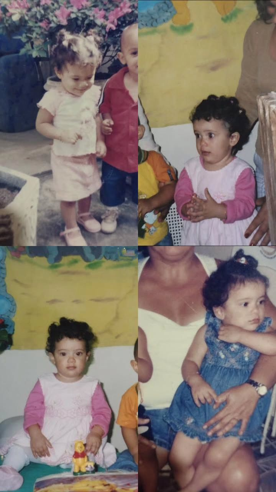

Me chamo Fernanda, tenho 20 anos, sou nascida e criada em Vila Velha. Tenho 4 irmãos, um deles sendo meu gêmeo. Atualmente curso Ciência da Computação na Universidade Vila Velha, pois, apesar de não ser uma área que inicialmente eu me identificasse, gosto de tecnologia e busco me encontrar e me fascinar pelo curso e tudo o que ele pode oferecer. Sou apaixonada por música, livros, filmes e pelo mundo. Sou entusiasta de curiosidades históricas e sobre o passado do nosso planeta.

A música é uma das coisas mais importantes na minha vida, tenho 5 tatuadas e todas significam muito pra mim.
Abaixo você poderá escutar as músicas pelo Youtube:

Por fim, abaixo deixarei o áudio da minha música favorita de todas: White Ferrari, do meu cantor favorito, Frank Ocean.

Abaixo deixarei meu Last Fm e meu Letterboxd, para conhecer mais do meu gosto por músicas e filmes.

💼 Vida Profissional
Trabalhei por 3 anos na empresa Autoglass, iniciei como Jovem Aprendiz no setor de Devolução Fornecimento, passei pelo estágio, até chegar à minha efetivação. Trabalhei, por um pequeno período, como Assistente Administrativo na Associação Boulevard Mar D'ule, em 2025.
🎯 Habilidades
- Empatia
- Comunicação
- Facilidade em aprender
- Trabalho sob pressão
- Melhoria contínua